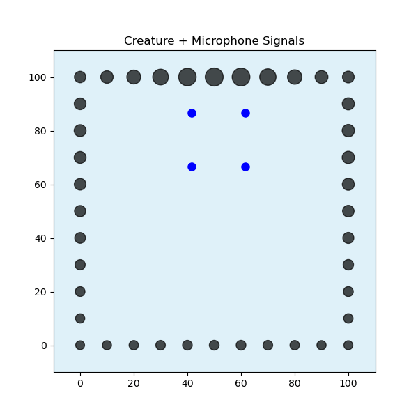
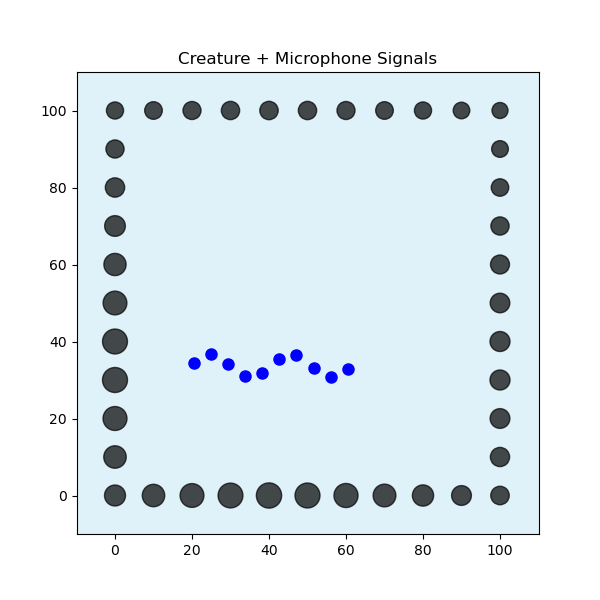
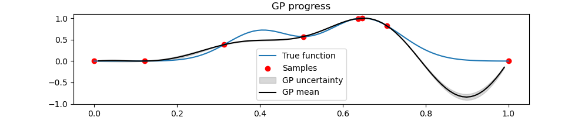
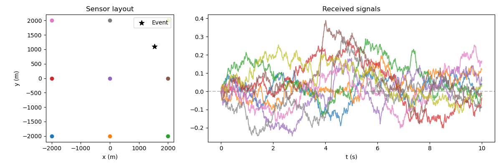
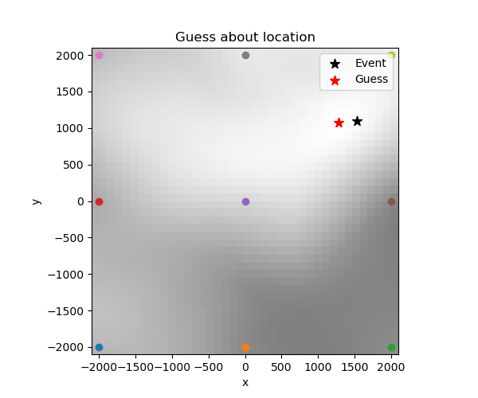
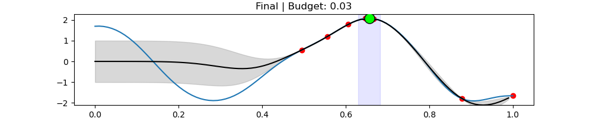
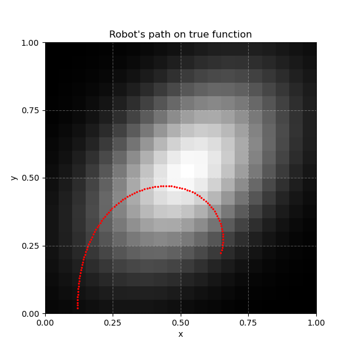
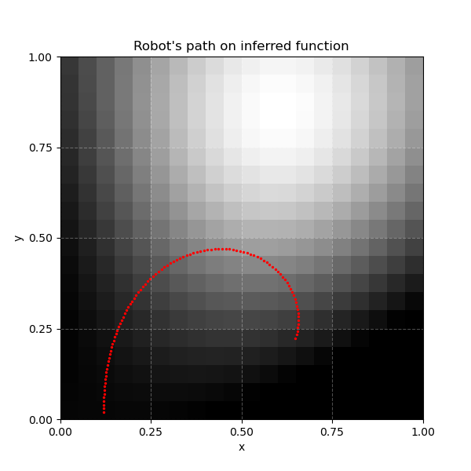

PhD direction: passive acoustic inference for underwater monitoring
Deep-sea population surveys need sensing where light, communication, and access are constrained. Cameras and artificial lighting disturb animals and burn energy. My hypothesis: marine animals generate partially distinguishable sounds when they move, and a low-power hydrophone array can capture enough of that signature to infer species or coarse groups — enabling long-duration, low-disturbance, energy-efficient surveys.
This raises two research questions:
- How reliably can marine species be identified from movement acoustics alone?
- How can rare-event data collection be maximized by a system under energy constraints?
I've explored both questions in a series of simulation-based notebooks, published as Energy-Efficient Marine Inference.







